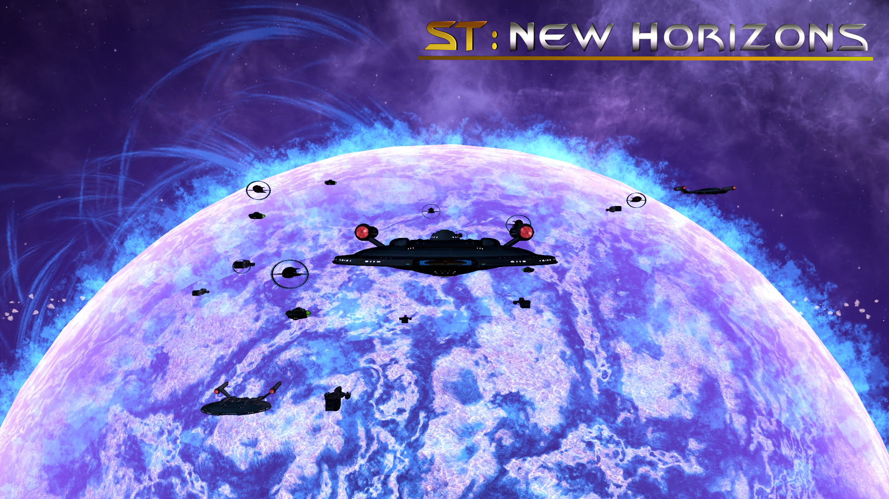
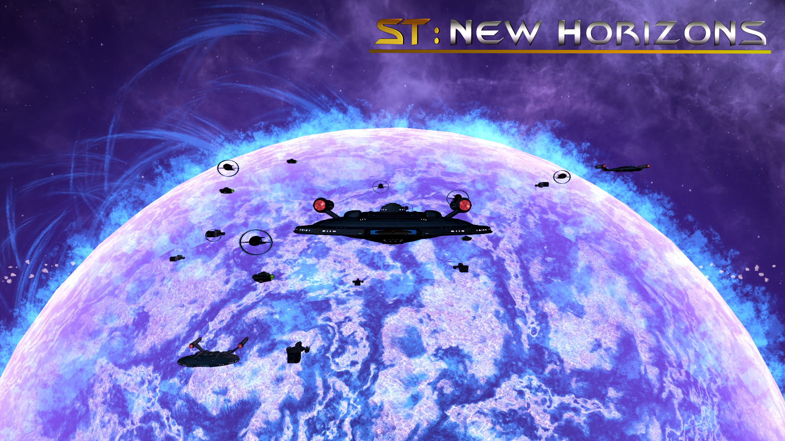

ST:New Horisons
Star Trek New Horizons is a community-driven project aiming to deliver an exceptional Star Trek game experience. This is a total conversion. Prepare to relive your favorite Episodes and movies, this mod will guide you through the entire canon Star Trek timeline, starting in the year 2150 with ENT era up to the year 2400 and beyond. Explore strange new worlds, meet new civilizations, research the unknown, form a new federation and prepare to fight the upcoming threats to the galaxy.
- Unique static galaxy maps, including several built for low-end PCs and one that re-imagine the classic playing style of Birth of the Federation
- 70+ pre-scripted Star Trek canon races with animated portraits
- Full ship sets for over 20 species, including United Earth, Klingon Empire, Romulan Star Empire, Cardassian Union, The Dominion and Borg Collective
- Pirate and Space-Aliens with generic shipsets
- Playable Borg faction, with a unique story, technologies, components and an assimilation mechanic
- More than 400 unique ship models
- Unique era mechanic including ENT, TOS, TMP and TNG eras for FED, ROM, KDF
- Incremental NCC ship registries for Starfleet vessels.
- New Weapons, Shields, Unique Components, Civilian Modules and special effects
- Hundreds of new events, with nearly 500k written words that make dozens of hours of original narrative
- Numerous new megastructures, including Suliban Helix, Dominion prison asteroids, Borg Unicomplex and the Argus Array
- Custom ship behavior
- Improved AI
- New Tradition system, with the ability to unlock upgradeable Deep Space Stations
- Innovative new ship designer with tons of possible variations
- 500+ Race specific weapons
- 400+ new components
- Entirely new techtree containing more than 1300 technologies
- Many Star Trek anomalies and events
- Complete UI rework, with new UI sub-mods.
- Sounds, Music and Voice-Overs rework, with several new and original tracks
- New policies, allowing you to make decisions on your empire concerning health, education and economy
- New Space-Animations
- 50 +unique planets and terraforming mechanics including gfx for tilesets and planet surfaces
- New city environment graphic for Tholian, Cardassian, Vulcans and Klingons
- Completely overhauled utility system
- 7 unique new ship classes
- Cloneable Jem’Hadar and Vorta for the Dominion
- Federation Council mechanic and the Dominion “The Great Link” and member state mechanic
- Romulan Tal Shiar Committee and Obsidian Order Espionage mechanic
- Federation Story, with the option to form the Federation
- Unique mechanics for Ferengi and Bajorans
- Unique stories for Klingon, Romulans, Tamarian, Cardassian and many others
- Multiple unique Crisis, including Xindi, Alar Jihad, Species 8472 Invasion, Mirror Universe Invasion and many more
- Localisations: English, German, Russian, French and Spanish
 
